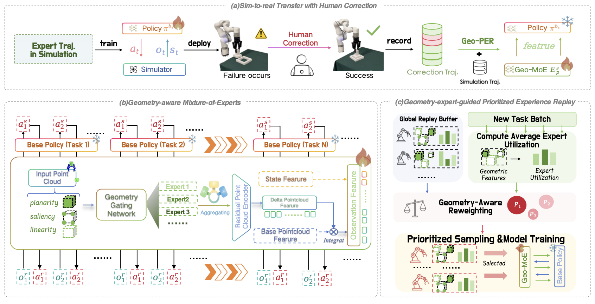
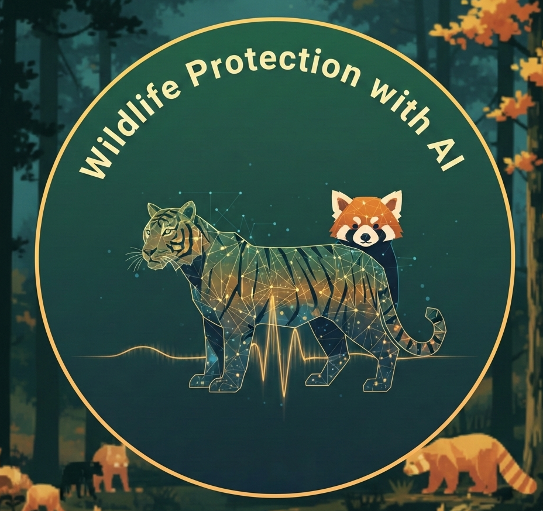
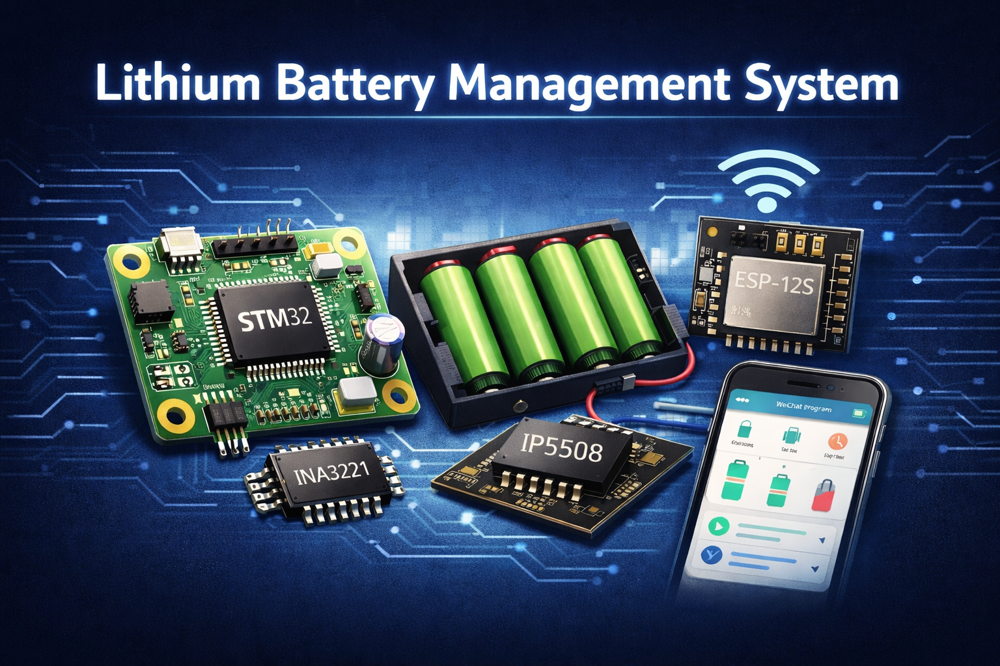

Wenbo Yu (余文博)
I am a junior student at Beijing Forestry University, majoring in Automation.
I am also a member of GeWu-Lab, working closely with Wenke Xia and Prof. Di Hu.
My research interests focus on Robotic Manipulation and Robot Learning.
🔍 I am actively seeking:
• Summer Research Internships
• CS/Robotics PhD positions starting Fall 2027
Feel free to reach out anytime!
Wenbo Yu
Latest News
🎉 CVPR 2026 - Our paper "GeCo-SRT: Geometry-aware Continual Adaptation for Cross-Task Sim-to-Real Transfer" has been accepted! Thanks to all co-authors!
CHI 2025 - Served as a Student Volunteer at ACM CHI Conference in Yokohama, Japan.
Research - Started research at GeWu-Lab, Renmin University of China as a Research Assistant.
Award - Received Second Prize in Beijing Division of China International College Students' Innovation Competition 2024.
Scholarship - Awarded First Class Scholarship for Outstanding Students (Top 1%) at Beijing Forestry University.
Publications

GeCo-SRT: Geometry-aware Continual Adaptation for Cross-Task Sim-to-Real Transfer
CVPR 2026
Projects

Wildlife Protection with AI
Beijing Forestry University
Optimized deep learning models for wildlife classification and tracking in infrared imagery. Deployed field monitoring equipment and conducted large-scale data preprocessing.
Safe Reinforcement Learning
Beijing Forestry University (Advisor: Prof. Junguo Zhang)
Enhanced Actor-Critic architecture by integrating Control Barrier Functions (CBF) and risk-aware models for safe trajectory planning in complex environments.

Lithium Battery Management System
Beijing Forestry University
Designed and implemented an STM32-based 18650 battery charging/discharging management system with IoT monitoring. Integrated IP5508 power management, INA3221 multi-channel monitoring, and ESP-12S Wi-Fi module for remote data transmission via WeChat Mini Program.
Experience
Research Assistant
Dec 2024 - Present
Working on sim-to-real transfer and robotic manipulation under the supervision of Prof. Di Hu.
Bachelor of Engineering
Sep 2023 - Jun 2027 (Expected)
Major in Automation.
Honors & Awards
First Class Scholarship for Outstanding Students (Top 1%), Beijing Forestry University
Science and Technology Innovation Scholarship, Beijing Forestry University
Second Prize (Beijing Division), China International College Students' Innovation Competition
Third Prize, "TI Cup" Beijing College Student Electronic Design Competition